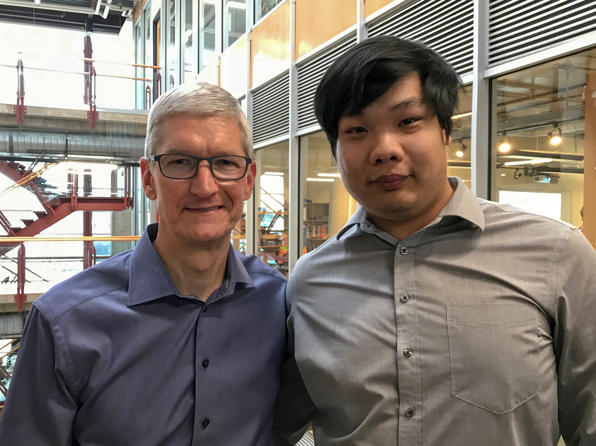

Tuan Mai

About Tuan
Tuan Mai was born in Mississauga, Ontario, Canada and received an
Honours Bachelor of Computer Science (B.CS.) in 2019 from Sheridan College.
Tuan has great experience as a mobile application developer and researcher
with a strong passion for Engineering, whether it be software or hardware.
He has lots of knowledge in cross domain fields of health and retail management.
Tuan is interested in learning and exploring machine learning, artificial intelligence,
and augmented reality. He is constantly seeking new opportunities to create
a means to help society through software and new technology.
More about Tuan
Projects
A few projects done during school, work, or for fun.
For a complete list, check out the projects page, or click on a project for details.
-

Undergraduate ThesisAugmented Reality Visualization System of Polycystic Kidney Disease for Preoperative Planning. 2019.
-
Product DetectionComputer Vision on the iPad for Sales Rep Optimization in the Field. 2018.
Achievements
A few achievements during school and work.
-

Selected to showcase projects to Tim Cook (Apple CEO). Jan 23, 2018.
-

Selected to showcase projects to the Honourable Deb Matthews (Minister of Advanced Education and Skills Development). Jan 17, 2017
-

Mobile Computing Symposium Competition – First PlaceWon first place out of 20 teams with standout application that solves a real-world business/community problem. Judged by an expert panel of industry partners including Microsoft, Apple, IBM, Rogers, IDC, and SOTI. Oct 25, 2016
Resume
Education
Hons. Bachelor of Computer Science B.CS. Sept 2014 - Apr 2019
Sheridan College Oakville, ON
Undergraduate Thesis - 2019:
Developed a HoloLens augmented reality application (C#) allowing for medical professionals to better plan surgical procedures, and enable real-time collaboration.
The application reads DICOM files (CTs, MRIs, US), then reconstructs the scanned organs in an interactive 3D model.
Relevant Coursework:
- Software Engineering / Design
- Data Structures and Algorithms
- Ubiquitous Computing
- Cognitive Computing
- Artificial Intelligence
- Programming Languages / Principles
- Advanced Mobile Application Develepment
- Distributed Mobile Computing
- Database Modelling
- Operating Systems Fundamentals / Analysis and Design
- Computer Architecture
- Computing in Augmented Reality
- Enterprise Software Systems
- Web / Mobile Web Application Design & Implementation
- Network Foundations & Principles
- Internet Protocol Engineering
- Human Computer Interaction
Electrical Engineering 2012 - 2014
University of Ontario Institute of Technology (UOIT) Oshawa, ON
Completed 60 credits towards Hons. Bachelor of Electrical Engineering.
Mentored high school For Inspiration and Recognition of Science and Technology (FIRST) Robotics Team.
Relevant Coursework:
- Electrical Engineering Fundamentals
- Introductory Electronics
- Circuit Analysis
- Complex Analysis
- Fundamentals of Electromagnetics
- Engineering Design
- Digital Systems
- Programming for Engineers
- Thermodynamics and Heat Transfer
- Calculus I & II
- Discrete Mathematics
- Differential Equations
- Physics I & II
- Chemistry
- Oscilloscopes
- Waveform Generator
- Multimeter
- Power Supply
Experience
Mobile Application Developer Jan 2016 - Dec 2018
Encore Market Engagement Oakville, ON
Joined a small team of 4 to design, prototype, and develop a solution for a current retail market management bottleneck.
Worked as both a Mobile Application Developer and Team Lead to design an application to detect products of interest in retail stores.
Designed and developed an iOS application (Swift) that utilizes machine learning and computer vision (OpenCV) to enhance sales representatives’ routine.
This includes creating object detector algorithms in MATLAB to detect distinct objects of interest on store shelves.
Increased sales representatives’ efficiency by 12.5%.
Further tasks included:
- Extending the application onto wearable/embedded devices
- Creating a proof of concept application that incorporates gamification to engage employees
Academic Researcher Jan 2015 - Dec 2015
Sheridan's Centre for Mobile Innovation (CMI) Oakville, ON
Responsible for researching different wearable technology that could be incorporated into academia.
Additionally worked on integrating wearable devices to help aid and improve within academia by increasing proficiency of students and encourage learning.
Explored the Microsoft Band and the Myo Armband.
Resume
Download my resume here.